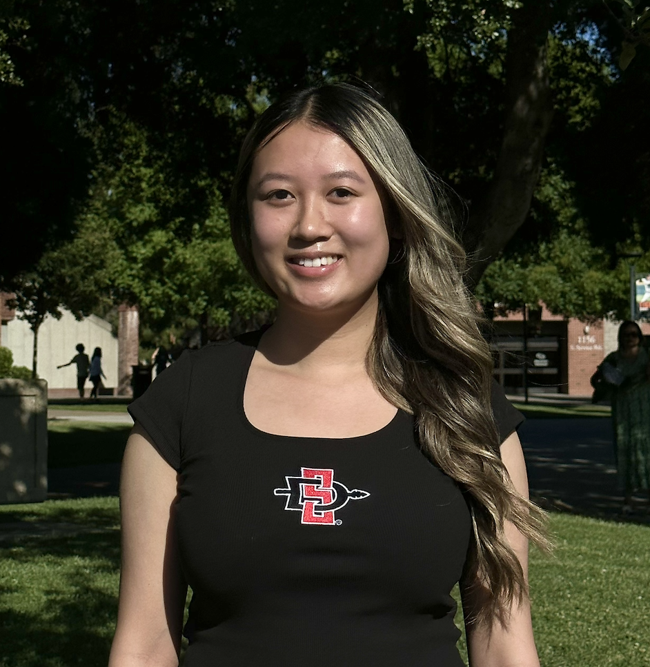

Kaylie Pham

Summary
Motivated and detail-oriented Computer Science student with expertise in Python, Java, C, C++, HTML, CSS, and MIPS. Passionate about solving complex problems and eager to contribute meaningful insights through innovative solutions.
Education
San Diego State University (2022-2026)
Bachelor of Science in Computer Science
- GPA: 3.88
- Relevant Courses: Data Structures, Advanced Programming Languages, Computer Architecture, Discrete Mathematics
- Honors: Dean's List
Ronald E. McNair High School (2018-2022)
- GPA: 3.97 (unweighted), 4.22 (weighted)
- California Scholarship Federation, National Honors Society, Health Occupations Students of America, Mathematics, Engineering, Science Achievement (MESA)
Work Experience
San Diego State University AI4Business Lab (San Diego, CA)
Student Researcher (August 2024 – December 2024)
- Conduct in-depth research in AI, machine learning, and data science, focusing on advancements in CodeGPT
- Collaborate with a team to explore applications of natural language processing, augmented retrieval, automatic code repair
- Classify and analyze 50+ scholarly research papers, producing comprehensive reports that distill key findings
- Objective: Contribute to a comprehensive survey paper to synthesize findings and support ongoing research initiatives
GK Mongolian BBQ (Stockton, CA)
Server (September 2021 – July 2022)
- Greeted and served customers, handled dine-in and to-go orders, and managed transaction processing
- Collaborated with team members to establish efficient service and provide customers with a positive dining experience
Kumon (Stockton, CA)
Tutor (September 2019 – June 2021)
- Tutored students in math and English, covering a range of topics from the fundamentals to advanced concepts
- Graded exams and assignments to measure student progress and provide guidance for improvement
- Collaborated with team members to ensure an encouraging educational environment
Certifications, Skills & Interests
- Certifications: LearnX Python Development Course
- Skills: Algorithms, Data Structures, Complex Debugging, Analytical Problem Solving
- Programming Languages: Python, Java, C, C++, JavaScript, HTML, CSS, MIPS
- Interests: Software Engineering, Web Development, Cloud Engineering, Artificial Intelligence
Projects
Snake Game
- Designed and implemented a Snake game in Python using object-oriented programming (OOP)
- Developed a high score system with file I/O to save and retrieve player data
- Implemented collision detection and score tracking for engaging gameplay experience
Turtle Crossing Game
- Developed a Python game using Turtle graphics, implementing player controls, dynamic obstacles, and collision detection
- Designed game logic with object-oriented programming for player movement, level progression, and a scoring system
- Utilized randomization and efficient code structure to manage increasing difficulty and game state transitions
Image Processing Kernels
- Implemented three image processing kernels in MIPS assembly, demonstrating an understanding in low-level programming and data management utilizing stacks and nested loops
- Implemented algorithms for image thresholding, affine transformation, image segmentation, image cryptography
Other
Contact Me
My Hobbies